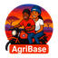

👨🌾
Farmer Community
Connect with other farmers, share experiences, publish posts, ask questions and learn from the farming community.

Built for farmersConnect with farmers, share knowledge, learn practical agriculture, manage farming activities, and discover opportunities — all in one community.
Explore Farmer Community Learn MoreFarmer Community brings useful agricultural tools, information and community features together in one easy-to-use mobile application.
Connect with other farmers, share experiences, publish posts, ask questions and learn from the farming community.
Keep agricultural records and organize information about crops, production, activities, expenses and yields.
Keep useful records relating to livestock, feeding, breeding, production, identification and farm activities.
Ask farming-related questions and receive AI-powered information to support your agricultural learning and planning.
Access weather information and forecasts to help with general agricultural planning and decision-making.
Discover agricultural products, opportunities and farming-related employment listings shared through the community.
Farmer Community is a farming-focused digital platform designed to make agricultural knowledge, farmer interaction and useful farming tools more accessible.
The platform is designed for farmers who want to learn, communicate, keep records, discover opportunities and use modern technology to support their farming activities.
Farmer Community supports farmers and agricultural communities with practical digital tools, educational resources and community interaction.
Features may change and improve as the application develops.
Explore the app, connect with fellow farmers and make technology part of your farming journey.
Contact Us